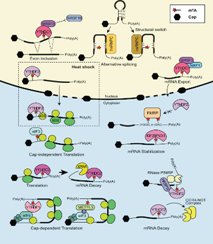
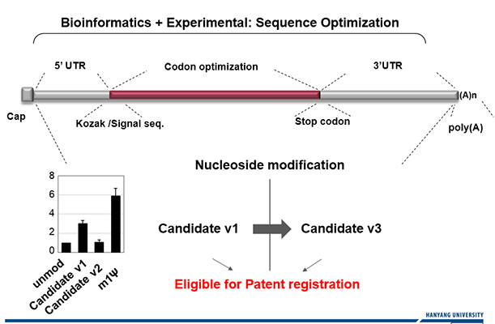

|
2 |
연구테마 소개


RNA 후성유전학적 변형 (RNA modification)은 후성전사체학 (Epitranscriptomics)라는 이름으로 최근 전 세계적으로 각광받고 있는 RNA 변형에 대한 연구로써 암, 유전병 등 다양한 질병을 유발하는 것으로 알려져 있습니다. 반면, RNA 변형은 mRNA 백신에서 가장 핵심적인 기술로 사용이 되기도 하여 백신을 비롯한 치료제 개발의 주요 요소로써 널리 각광받고 있습니다.
우리 연구실은 포유류 세포에서 RNA 변형 조절 기전과 그로 인한 유전자 발현조절 기전을 연구합니다.
주로 암세포에서 N6-methyladenosine (m6A) RNA 변형을 연구하며 mRNA에 m6A 변형이 생기는 위치, 빈도, 역할 등의 기전 연구와 그로 인한 유전자 발현 조절이 암세포에 미치는 영향을 복합적으로 연구합니다.
또한, RNA 변형을 이용한 새로운 mRNA 백신 및 치료제 개발 연구를 하고 있습니다. RNA 백신은 화이자/바이오엔텍과 모더나의 mRNA 백신이 최초로 사용허가를 받았으며, 기존 RNA 백신 및 치료제 개발의 한계였던 낮은 RNA 안정성과 단백질 발현효율을 RNA 변형중 하나인 1-N-Methyl-Pseudouridine (m1Ψ)을 이용함으로써 효율을 극대화하였습니다.
우리 연구실은 새로운 변형 핵산을 이용한 mRNA 백신 및 RNA 치료제 개발에 집중하고 있습니다.
|
|
1 |
RESEARCH 01
m6A mRNA 변형 조절기전과 이를 통한 암 발생 기전 연구
- N6-methyladenosine (m6A)는 mRNA에서 abundant하게 발견되는 RNA 변형으로, 일부 바이러스와 대부분의 진핵생물에서 발견됩니다.
m6A는 모든 RNA에서 발견이 되었으며, mRNA 대사를 조절하는데 중요한 역할을 합니다.
- 이러한 m6A는 methyltransferase인 METTL3에 의해 형성되며, demethylase인 ALKBH5와 FTO의 발견으로 인해 m6A 변형은 reversible 하다는 것이 밝혀졌습니다.
- 또한 m6A는 다양한 생물학적 과정에 관여할 수 있으며, 특히 암과 같은 질병에서 중요한 역할을 한다고 보고가 되고 있습니다. 따라서 저희 실험실은 m6A 변형이 암에 미치는 영향뿐만 아니라, m6A가 RNA에서 조절이 되는 기전에 대해 연구를 함으로써 다양한 질병을 치료하는데 기반이 될 수 있는 연구를 진행하고 있습니다.
RESEARCH 02
lncRNA 유래 micropeptide neoantigen 생성 기전 및 그에 의한 tumor-immune 미세환경조절 기전 연구
- Long non-coding RNA (lncRNA)는 단백질을 만들어내지 않는 RNA로 알려져 있고, 우리 몸을 구성하고 있는 RNA의 대부분을 차지하며 세포를 유지하는데 중요한 역할을 담당하고 있습니다. 대표적으로 핵에 위치할 경우 전사 조절, RNA 스플라이싱 등에 관여하며, 세포질에 위치할 경우에는 번역 조절, 단백질-단백질 간 상호작용, miRNA의 발현 수준 조절 등의 역할을 수행하게 됩니다.
- 이러한 lncRNA는 번역 과정을 거치지 않기 때문에 단백질이 아닌 RNA 자체로서 기능하는 RNA로 잘 알려져 있습니다. 하지만 최근에 lncRNA임에도 불구하고 짧은 길이의 단백질을 만들어 낸다는 내용의 연구들이 많이 보고되고 있습니다. 이와 더불어 RNA 후성유전학적 변형이 일어나기도 한다는 많은 연구들이 보고되고 있습니다.
이에 따라서 저희 연구실에서도 lncRNA가 만들어내는 짧은 길이의 단백질이 암에 미치는 영향과 m6A 변형이 lncRNA의 번역에 미치는 영향에 대해 연구하고 다양한 암을 진단할 수 있는 진단자를 찾기 위해 노력하고 있습니다.
RESEARCH 03
신규 mRNA 백신 개발을 위한 T7 RNA polymerase 엔지니어링, 변형 핵산 및 코돈 최적화 연구
- mRNA 백신은 최근 대한민국을 비롯한 전세계를 괴롭혔던 전염병인 COVID-19으로 인해 각광받기 시작하였습니다. 이러한 mRNA 백신은 항체를 만들어낼 수 있는 RNA를 체내에 주입하여 안정적인 항체 형성을 목적으로 하는 백신입니다.
- 한편, 체내의 mRNA는 RNA의 5’말단에 Cap 구조와 3’말단에 Poly(A) tail 구조를 가지고 있어 안정적인 번역을 수행하고 있습니다. 이와 더불어 변형 핵산은 mRNA를 안정화시키는데 중요한 역할을 하고 있습니다.
- 이에 착안하여 저희 연구실에서는 In vitro에서 만들어지는 mRNA가 체내에 주입되었을 때 안정적으로 항체를 형성하고 분해를 지연시킬 수 있는 기전을 연구하여 mRNA 백신 platform 및 치료제를 만드는 것을 목적으로 연구하고 있습니다.
RESEARCH 04
RNA modification을 통한 복제 의존적 히스톤 mRNA 대사 조절 연구
- 세포 주기(cell cycle)은 세포의 생애주기로서 G1, S, G2, M기의 순서로 순환하며, 세포는 이 과정을 통해 분열하고 복제합니다. 이 중 S기는 DNA가 복제되는 과정이며 chromatin 구조를 통해 DNA를 안정화하는 histone 단백질 또한 이 시기에 폭발적으로 생성됩니다.
- Histone mRNA는 histone 단백질의 생성에 필수적이며, DNA복제가 저해되었을 때 histone mRNA가 빠르게 분해되는 현상이 알려져 있습니다. 이러한 기작은 불필요한 histone 단백질의 생성을 저지함으로서 추가적인 에너지 낭비를 방지하기 위함이라 해석됩니다.
- RNA modification은 RNA 전사체의 전반적인 대사를 조절하는 변형이며 무수히 많은 종류가 존재합니다. 특히 N6-methyladenosine (m6A)는 mRNA상에서 가장 빈번하게 발견되는 변형 adenosine이며 METTL3, ALKBH5, FTO등에 의해 reversible하게 형성됩니다. m6A의 유무에 따라 RNA의 번역, 이동, 안정성 등이 조절됩니다.
세포주기에 특이적으로 조절되는 histone mRNA 대사를 m6A RNA 변형을 통해 이해하고자 합니다. m6A가 histone mRNA의 조절에 어떠한 영향을 끼치는지 밝히고, 그 세부 메커니즘을 구체적으로 알고자 연구를 진행하고 있습니다.
|